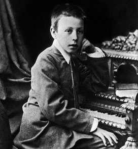

На выпускной экзамен Рахманинов представил одноактную оперу «Алеко» (по поэме Пушкина «Цыганы»), которую написал всего за 17 дней! За неё присутствовавший на экзамене Чайковский поставил своему «музыкальному внуку» (Рахманинов учился у Танеева, любимого ученика Петра Ильича) пятёрку с тремя плюсами. Спустя год опера 19-летнего композитора была поставлена в Большом театре. Музыка оперы, покоряющая юношеской страстностью, драматической силой, богатством и выразительностью мелодий, получила высокую оценку крупнейших музыкантов, критиков и слушателей. Музыкальный мир отнёсся к «Алеко» не как к школьной работе, а как к творению высочайшего мастера. Особенно высоко оценил оперу П. И. Чайковский: «Эта прелестная вещь мне очень понравилась»,- писал он своему брату. В последние годы жизни Чайковского, Рахманинов часто с ним общается. Он высоко ценил творца «Пиковой дамы». Ободрённый первым успехом и моральной поддержкой Чайковского, Рахманинов после окончания консерватории сочиняет ряд произведений. Среди них - симфоническая фантазия «Утёс», первая сюита для двух фортепиано, «Музыкальные моменты», до-диез минорная прелюдия, романсы: «Не пой, красавица, при мне», «В молчанье ночи тайной», «Островок», «Весенние воды». Под впечатлением смерти Чайковского в 1893 году создано «Эллегическое трио».
